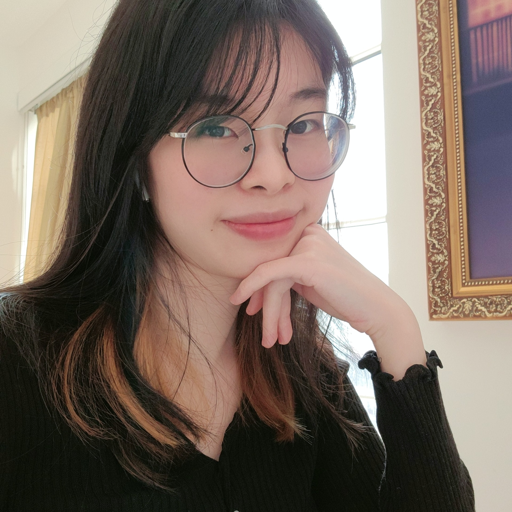
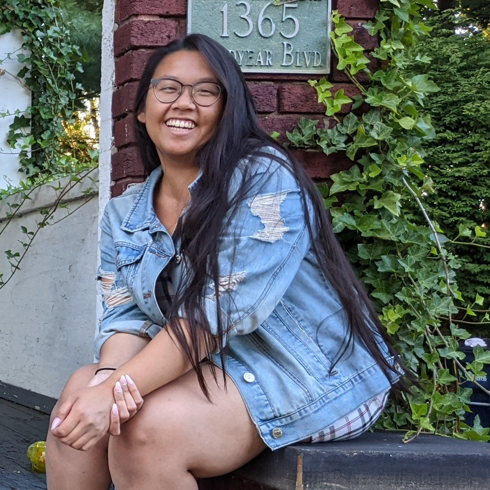

About Us
AMY TAN / I CAN'T LIVE WITHOUT SUNSCREEN
I'm a 3rd year HCC major interested in UX design and front end web development. I served as a committee head for RIT Women in Computing for 2 years and is currently on the eboard for our uni's Google Developer Student chapter.
EMILY TRAN / TOO BROKE FOR SKINCARE
I'm a 3rd year HCC major with concentrations in design and psychology. I'm a barista on the weekends and a Tetris 99 enthusiast. I'm passionate about helping others, which has led to my interest in UX design.
MATTHEW WYLIE / DOESN'T SKINCARE
I'm a 3rd year HCC student with a concentration in instructional technology. I'm interested in making product designs that are more accessible and can appeal to a variety of users, especially those with disabilities.